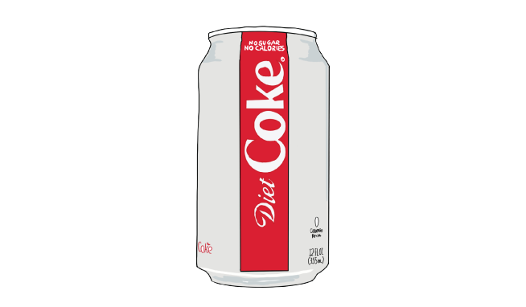

"I am in love with Diet Soda."
Growing up, my mom banned me from drinking coke, or any sort of soda pop, saying it’s bad for your teeth.
' You saw the news, Americans are fat because of those sugary drinks. ' she said.
I could drink once a month when I was invited to my friends’ birthday parties. For me, it was the taste of freedom. We did have Coke Zero or Coke Light, but it didn’t taste as good as the original coke.
So, when I first came to the States, I fell in love with Diet Coke. It tastes better than the regular coke and there is no sugar with no calories. The fact that coke is cheaper than spring water helped too. It’s only $3 for 12 cans of soda! Since then, I’ve been drinking Diet Coke.

When I went back home, I missed Diet soda and the Freestyle machine so much. So I decided to come back to the States.